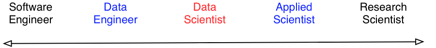
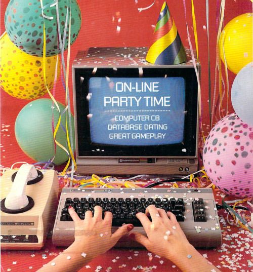
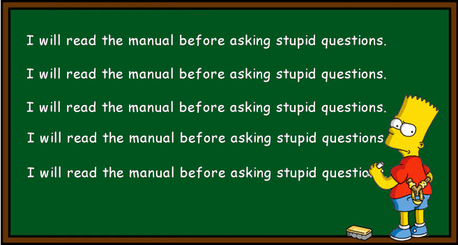
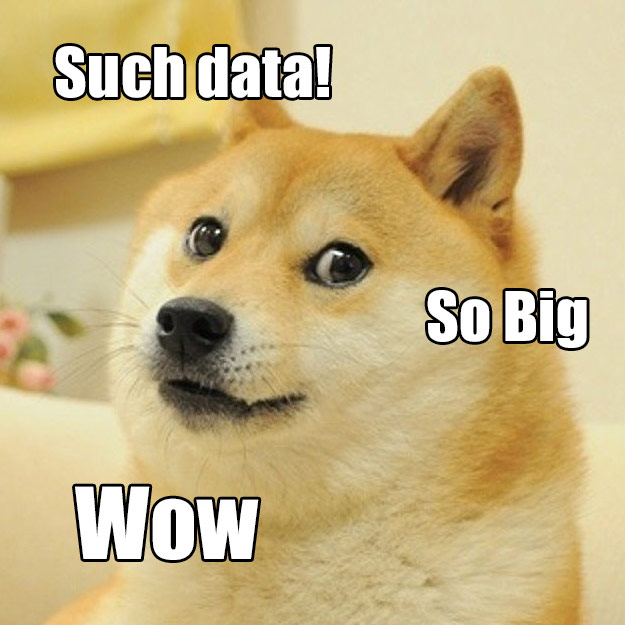
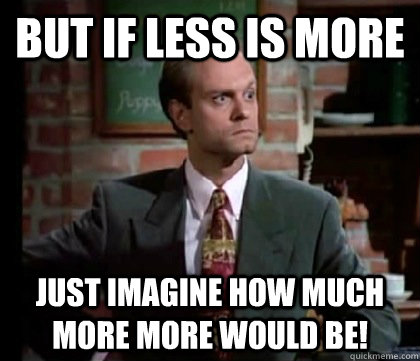

How to (almost) win Kaggle competitions
yanirseroussi.com | @yanirseroussi | linkedin.com/in/yanirseroussi
Note: This talk is also available as a blog post.
Bio
Software engineering/computer science background
- BSc CompSci Technion
- Intel, Qualcomm, Google
Conversion to data science
- PhD Monash: text mining and user modelling
- Giveable: data scientist, recommender systems, and a bunch of other things
- Next Commerce: head of data science, recommender systems, even more other things
Recently joined the big scary world as an independent consultant/entrepreneur: leads and invitations to connect are welcome
Overview
- Preliminaries: on Kaggle, data science, and my experience
- Ten tips
- General advice and ramblings
- Question time (but feel free to interrupt anytime)
What's Kaggle?
What's a data scientist?
What's a data scientist?

What's a data scientist?
Someone who sits in the middle of this continuum
Note: can replace applied scientist with data analyst, and research scientist with statistician
Where do you sit?
Why should data scientists kaggle?
Isn't it just free work?
Great training lab
No cheating: can't pick a friendly baseline (unlike academia)
No maintenance: write throwaway code (unlike industry)
Reputation building
Why should data scientists kaggle?
Nerdy fun!
My Kaggle experience
Results so far:
- 3rd/42 in ICFHR 2012: Arabic writer identification (solo)
- 6th/110 in EMC Data Science Global Hackathon: air quality prediction (team)
- 9th/476 in Blue Book for Bulldozers: auction sale price prediction (solo)
- 9th/194 in Yandex Personalized Web Search Challenge (team)
- 6th/121 in WISE 2014: Multi-label classification of Greek printed media articles (solo)
Would do more, but it's addictive and hard to timebox
Learned a few things in the process...
Tip 1: RTFM
Tip 1: RTFM
- Understand the competition timeline
-
Tick required boxes, even inexistent ones
- Example: $30K mistake
- Submit using the correct format, reproduce benchmarks
- Know the measure and data
Tip 2: Know your measure

Tip 2: Know your measure
- Understand how the measure works
- Use a suitable optimisation approach
- Often easy to achieve
- Can make a huge difference
Example: Hackathon MAE versus MSE
Tip 3: Know your data
Tip 3: Know your data
Overspecialisation is a good thing
Examples:
- Hackathon: how was the data obtained?
- Multi-label Greek: connected components
- Arabic writers: histograms
Beyond Kaggle:
Custom solutions win, the world needs data scientists!*
Tip 4: What before how

Tip 4: What before how
Know what you want to model before figuring out how to model it
Example: John's Yandex visualisations
Generally applicable for people coming from either side of the data science continuum
Tip 4: What before how
Become one with the data

Tip 5: Do local validation

Tip 5: Do local validation
Faster and more reliable than relying on the leaderboard
Recommendations:
- Mimic the competition setup
-
Prefer single split to cross validation:
- Faster
- Cross validation may be unsuitable (e.g., time series)
- Public leaderboard is extra validation
- Make exceptions for small data or when there's no time
Analogy for software engineers:
- Development: local validation
- Staging: public leaderboard
- Production: private leaderboard
Tip 6: Make fewer submissions
Tip 6: Make fewer submissions
(But not too few)
- Look better
-
Avoid overfitting the leaderboard
- StumbleUpon: Public #1 became private #283
- Big Data Combine: Public #1 became private #377
- Don't join bidding wars and give away your competitive advantage
- Use local validation to reduce the need for many submissions
Tip 7: Do your research

Tip 7: Do your research
- For any given problem, it's likely there are people dedicating their lives to its solution
- Deeper knowledge and understanding is a sure reward
Worked well for me:
- Arabic writers: histogram kernels
- Multi-label Greek: ECC/PCC
- Bulldozers: stochastic GBM sklearn bug
- Yandex: LambdaMART
Tip 8: Apply the basics rigorously
Tip 8: Apply the basics rigorously
- Obscure methods are awesome, but often the basics will get you very far
- Common algorithms have good implementations
- Running a method without minimal tuning is worse than not running it at all
Tip 9: The forum is your friend

Tip 9: The forum is your friend
- Subscribe to receive important notifications
- Understand shared code, but don't rely on it
- Try to figure out what your competitors are doing
- Learn from post-competition summaries
Tip 10: Ensemble all the things
Tip 10: Ensemble all the things
- Not to be confused with ensemble methods
- Almost no competition is won by a single model
- Works well with independent models – merge teams
Basic algorithm:
- Try many things
- Ensemble the things that work well
- Repeat 1 & 2 until you run out of time
- Almost win
Other resources
- Techniques to improve the accuracy of your predictive models by Phil Brierley
- Learning from the best by David Wind
- Getting in shape for the sport of data science by Jeremy Howard
- The zen of data science by Eugene Dubossarsky
- Getting started competitions
- Online courses, books, Wikipedia, etc.
How to get started?
Tips are useless if not applied
Software engineers: learn predictive modelling
Analysts: learn how to program Python
Data scientists: you have no excuse